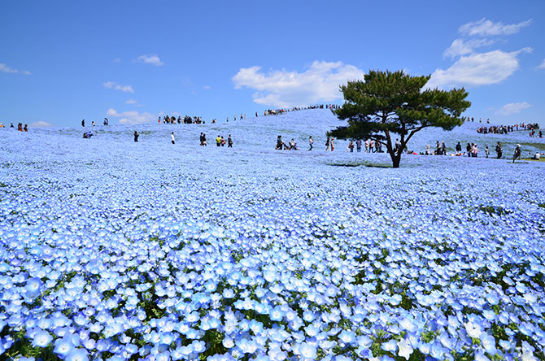

空と繋がる、青の一面絶景

茨城県ひたちなか市にある「国営ひたち海浜公園」は、広大な敷地に豊かな自然が広がる国営公園です。 特に春の「ネモフィラ」と秋の「コキア」が作り出す絶景は、日本国内だけでなく世界中から注目を集めています。
二大みどころ
春：ネモフィラハーモニー
4月中旬から5月上旬にかけて、「みはらしの丘」が約530万本の青いネモフィラで埋め尽くされます。空の青と丘の青が一体となる景色は圧巻です。
秋：コキアカーニバル
10月上旬から中旬にかけて、モコモコとした丸いコキアが鮮やかな赤色に紅葉します。緑から赤、そして黄金色へと移り変わるグラデーションも魅力です。